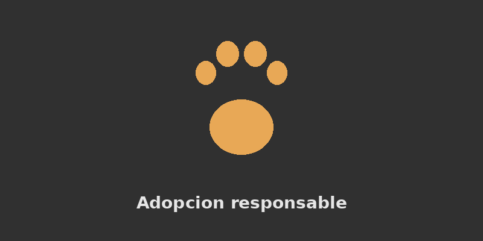

Caso curioso #1
Los perros pierden mas calor de lo que creemos en invierno, sobre todo los de pelo corto. Te contamos como saber si tu mascota esta pasando frio en la casa.
Ver casoLos perros pierden mas calor de lo que creemos en invierno, sobre todo los de pelo corto. Te contamos como saber si tu mascota esta pasando frio en la casa.
Ver casoAdoptar no es solo llevarse un animal a la casa. Estas son las preguntas que conviene responder antes de adoptar un perro o un gato.
Ver caso